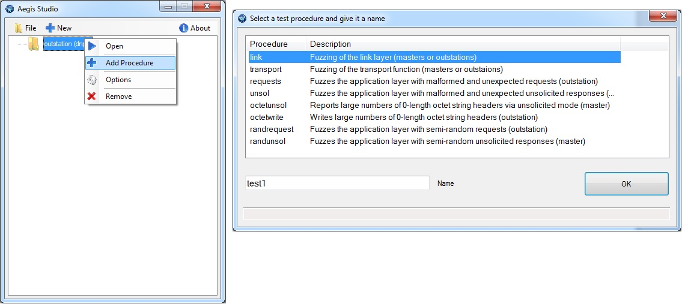
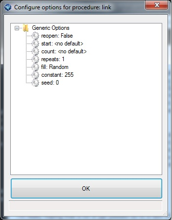

Adding procedures¶
Procedures are specific sets of test cases that can be individually configured and run. They appear in the main Studio form as a two circulating arrows underneath suite folder(s). You can add a procedure to a suite by right clicking on a suite node in the tree and then clicking Add Procedure.
You can reorder procedures within a suite by dragging and dropping the procedure nodes onto each other.
Generic options¶
Each test procedure has a number of generic options that can be configured in addition to any per-procedure options.
- reopen - Close and reopen the channel before every test. This is useful in stream-based protocols where an invalid message permanently corrupts the session.
- start - Start testing a particular test case id.
- count - Limit the number of test cases to the specified count.
- repeats - Repeat the specified test sequence (all settings) more than once. Useful for stressing non-fatal or non-deterministic bugs.
- fill - Specifics the source the “fill” value for non-random constant data.
- constant - The byte value to use for constant-fill mode.
- seed - The seed to use for the pseudo-random number generator.
Start and count are the most frequently adjusted parameters by the user. Most of the other values already have reasonable defaults in the install-included test plans.